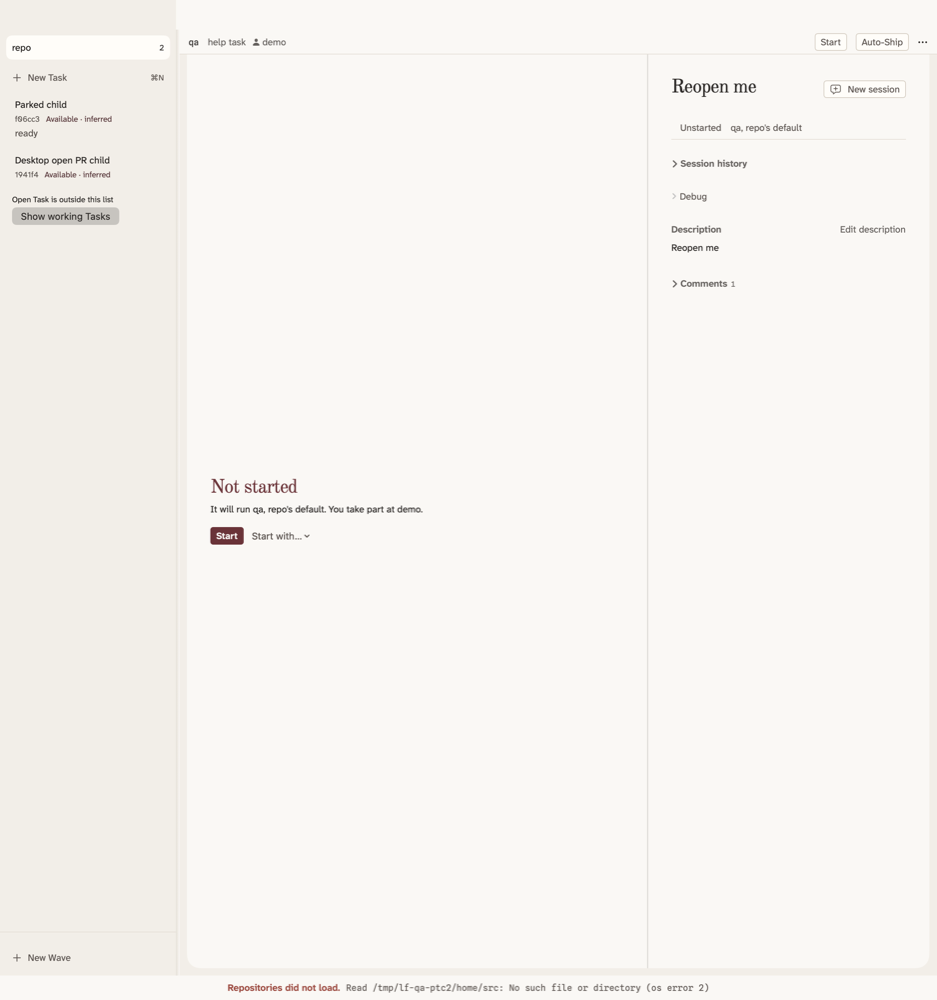

Branch lf on a private Machine (/tmp/lf-qa-ptc2): isolated HOME/LF_HOME,
bare origin behind a GitHub-shaped URL, the gh and claude stand-ins, a foreground lf server run.
Desktop: an isolated Dev bundle on that Machine, driven by the QA hook. Round 1's phone run (screenshots in scratch/qa/phone-*.png) is unchanged since; not repeated.
| Scenario | Saw |
|---|---|
Bare lf task complete on a parent: merged child with an open grandchild, a child with open PR and a running Graph, an unstarted child |
Refusal lists the indented tree; the live child reads #101 open, running (round 1 open item, now shown). tasks, task_prs, task_events identical before and after. works |
--children abandon while that Graph runs | Refuses, names the Graph run and lf task interrupt, writes nothing. works |
Served task.complete (desktop client), children: null and "abandon" | Both answer code: conflict with the CLI's text; store unchanged. works |
--children rehome --reason 'split into children' while the child still runs | Parent done, three children move to the grandparent, grandchild stays under its parent, Graph untouched; event {"kind":"completed","summary":"Task completed: split into children"}. works |
--children abandon from the grandparent, children holding idle stand-in conversations | Merged child done, the rest abandoned; PR #101 marked abandoned, its checkout and remote branch deleted, held conversations closed. works |
| Rehome past an abandoned ancestor / a deleted ancestor | "moved up to 99b9fb" (skips the abandoned middle); "moved to top level" when the middle is deleted. Bare refusal names the same destinations, singular grammar for one child. works |
| Wrong input | --children bogus: clap lists rehome, abandon, exit 2. Unknown Task: "not found". --children rehome on a childless Task: completes. lf task complete on an abandoned Task names lf task reopen. |
Reopen the abandoned child with a published PR, then lf task run | PR #101 → historical=1; stale checkout row removed. lf task run placed a fresh checkout from current origin/main (has merged #100); lf pr open created #102 as sequence 2. Merging #102 and lf pr reconcile completed it through the pending leaf request. works |
Reopen an abandoned never-started child, lf task complete | Done at once. works |
Child parked at demo, abandoned through its parent, reopened | Status action: run; Desktop row recommended: run, run_control.unavailable: null. works |
$ lf task complete fcb0ae
Error: fcb0ae has 3 open children; say what happens to them:
1c1feb Log each retry #100 merged
ba772e Retry metrics unstarted
77fb04 Retry budget #101 open, running
693aeb Backoff docs unstarted
lf task complete fcb0ae --children rehome # direct children move up to 20be56 and stay open
lf task complete fcb0ae --children abandon # merged descendants done, the rest abandoned
$ lf task complete 82f62a --children rehome
82f62a done
c51397 moved up to 99b9fb
$ lf task complete 17a1f7 --children rehome
17a1f7 done
74d3c1 moved to top level
Reached mounted this round. Complete Task… is only in context menus the hook can't open, so a temporary local
qa-complete Desktop action called the production WorkModel.beginComplete; everything after that is the shipped dialog and write path. Reverted before commit; route recorded in .lf/qa/task-children.md.

demo.lf task checkout then lf task abandon within a second: the server's recovery pass, which had read the Task as open, started its conversation one second after abandoned_at (35d41e; also a0fde3 abandoned through its parent). The stand-in stayed running under the holder. Read-then-start race in server/recovery.rs.no_action) in status and on the Desktop row, though Run is enabled. Reached here only by killing cmd: step PIDs, since lf task interrupt does not stop a running cmd: step (round 1 item). A child parked at an interactive step reopens to run.lf task status for any Task with no checkout here prints no action: line (unplaced path in bin/lf.rs), so the reopened Task's status doesn't say "run" until it's placed; Desktop does.private Machine CLI + served socket walkthrough above pass (here) Desktop Dev bundle, dialog both layouts + reopened Start pass (here) Swift suites and full Rust suites CI at gate